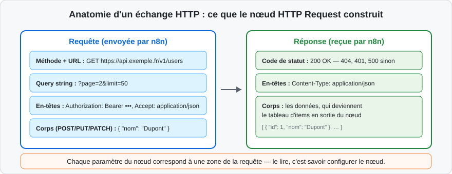
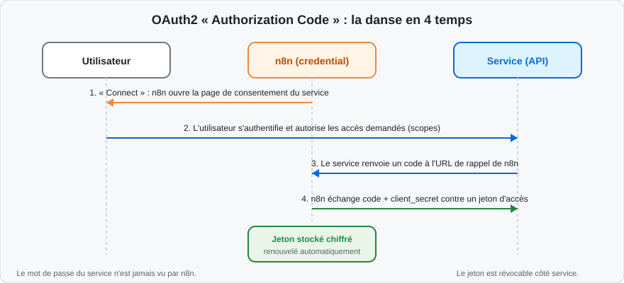
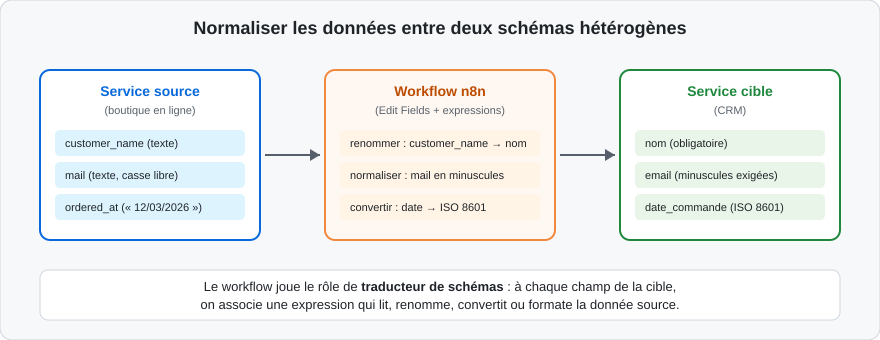
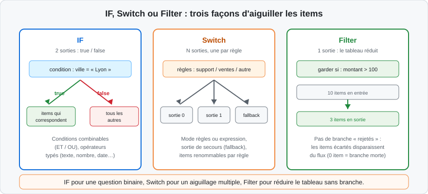

Un catalogue de plusieurs centaines de nœuds
Le chapitre 1 a présenté le moteur de n8n ; cette journée lui donne des choses à connecter. n8n embarque plus de 400 intégrations natives : des nœuds dédiés à un service précis — Gmail, Slack, Google Sheets, GitHub, PostgreSQL, Notion, HubSpot, Jira, Salesforce — qui en masquent la complexité d'API derrière des paramètres lisibles.
Chaque intégration native propose :
-
des actions (créer une ligne, envoyer un message, chercher un contact), choisies dans une liste déroulante — pas de documentation externe à traduire ;
-
parfois un déclencheur d'application (nouvel e-mail, nouveau ticket), vu au chapitre 1 ;
-
une connexion par credential : les identifiants se configurent une fois, puis se réutilisent dans tous les workflows.
Explorer le catalogue
Le panneau d'ajout de nœuds (bouton + du canevas) sert d'explorateur :
- le champ de recherche trouve un service par son nom (« sheets », « mail ») ;
-
l'onglet Actions liste les nœuds qui agissent, l'onglet Triggers ceux qui déclenchent ;
-
la saisie d'un verbe (« send », « create », « get ») fait remonter les nœuds capables de cette action, tous services confondus.
Chaque intégration dispose d'une page de documentation officielle décrivant ses opérations et ses options d'authentification ; le fichier Ressources en annexe pointe vers le catalogue complet.
Lire la documentation d'une intégration
Face à un service inconnu, la lecture de sa page de documentation officielle n8n répond à quatre questions, dans cet ordre :
- quelles opérations le nœud couvre-t-il, pour quelles ressources ?
-
quel mode d'authentification le credential exige-t-il — clé d'API, OAuth2, compte de service — et où l'obtenir côté service ?
-
quelles sont les limites connues (opérations absentes, pagination gérée ou non, formats particuliers) ?
-
existe-t-il un déclencheur associé, et dans quel mode (polling, webhook) ?
Ces quatre réponses suffisent pour décider de la stratégie : nœud natif si l'opération existe, HTTP Request avec credential prédéfini si elle manque, et elles évitent la découverte en plein atelier d'une impasse documentée depuis longtemps.
Anatomie d'une intégration native
Toutes les intégrations natives partagent la même ergonomie, qu'on retrouve dans le panneau de paramètres :
-
la ressource (Resource) : l'objet métier manipulé — Message, Contact, Row, File… ;
-
l'opération (Operation) : l'action sur cette ressource — Create, Get, Get Many, Update, Delete… ;
-
les paramètres : les champs de l'opération, obligatoires ou optionnels, souvent pré-remplis avec les listes réelles du service (feuilles d'un tableur, canaux d'une messagerie) une fois le credential renseigné ;
-
le credential : le compte utilisé, partagé entre tous les nœuds du même service.
Cette uniformité est un accélérateur : savoir configurer le nœud Google Sheets, c'est savoir configurer l'essentiel des intégrations — seuls changent la liste des ressources et le vocabulaire du service.
Exemple de lecture avec un nœud natif
La lecture de données avec un nœud natif suit toujours la même séquence :
-
poser le nœud (par exemple Google Sheets) et sélectionner le credential du compte ;
-
choisir la ressource (Sheet Within Document) puis l'opération (Get Row(s)) ;
-
désigner le document et la feuille — les listes déroulantes interrogent le service et proposent les valeurs réelles ;
-
exécuter « Test step » : chaque ligne du tableur devient un item, les en-têtes de colonnes deviennent les champs du
json; -
épingler la sortie si les appels suivants doivent être économisés.
Ce fonctionnement — une ligne lue = un item — est général : lignes de tableur, messages d'une boîte, enregistrements d'une base, tickets d'un support. Le modèle d'items du chapitre 1 rend toutes ces sources immédiatement compatibles entre elles.
Les nœuds « cœur » (core nodes)
Aux côtés des intégrations, une famille de nœuds génériques fournit la logique du flux, indépendante de tout service :
| Famille | Nœuds représentatifs | Rôle |
|---|---|---|
| Entrées/sorties | HTTP Request, Webhook, Respond to Webhook | Parler à n'importe quelle API |
| Logique | IF, Switch, Filter, Merge, Wait | Aiguiller, réduire, fusionner, temporiser |
| Données | Edit Fields, Split Out, Aggregate, Sort, Limit | Transformer les items |
| Code | Code, expressions | Traitements libres (chapitre 3) |
| Utilitaires | Date & Time, Crypto, Compression, FTP, RSS | Formats et protocoles courants |
Les intégrations natives sont les pièces d'origine constructeur : calées pour un modèle précis, elles se montent sans réglage. Les nœuds cœur sont les pièces universelles : vis, câbles, connecteurs standards. Un mécanicien compétent sait surtout se servir des pièces universelles — elles réparent ce que le constructeur n'a pas prévu. Le nœud HTTP Request est la pièce universelle par excellence.
Configurer un déclencheur d'application natif
Les déclencheurs d'applications vus au chapitre 1 se configurent, eux aussi, sur le modèle ressource/opération. La séquence type, illustrée avec le nœud Gmail Trigger :
-
poser le déclencheur et sélectionner le credential du compte (OAuth2 le plus souvent — n8n ouvre la page de consentement du service) ;
-
choisir l'événement écouté (Message Received, Message Sent…) ;
-
régler les filtres côté service quand ils existent (libellé Gmail, expédi- teur, dossier) — filtrer à la source économise des exécutions ;
-
choisir le mode de détection : polling à intervalle réglable, ou webhook quand le service le propose ;
-
exécuter « Test step » pour capturer un événement réel et épingler sa structure — champs
subject,from,snippet,id… — qui servira à écrire les conditions en aval.
Poser trois nœuds Gmail dans trois workflows ne demande qu'un credential Gmail, créé une fois et sélectionné partout. Multiplier les credentials pour le même compte transforme chaque rotation de mot de passe ou révocation en chasse aux trésors — et l'événement test capturé reste attaché au compte, donc identique quel que soit le nœud.
Et quand le service n'a pas de nœud dédié ?
Trois solutions, dans l'ordre de préférence :
-
vérifier si le service expose un credential prédéfini utilisable par le nœud HTTP Request — beaucoup d'intégrations natives autorisent ainsi d'autres opérations de la même API ;
-
utiliser le nœud HTTP Request avec un credential générique (clé d'API, OAuth2…) — c'est le sujet des deux sections suivantes ;
-
installer un nœud communautaire (community node) publié par la communauté — possible en auto-hébergé, après validation de sa qualité et de sa maintenance ; à réserver aux cas sans alternative, la prudence s'impose avec du code tiers.
Les limites à connaître des intégrations natives
Les nœuds natifs simplifient l'essentiel, mais trois limites reviennent en projet réel :
-
l'opération manquante : le nœud couvre les opérations courantes de l'API, pas forcément les 5 % exotiques — la parade est le nœud HTTP Request avec le credential prédéfini du même service ;
-
le retard de version : le service fait évoluer son API plus vite que le nœud n'est mis à jour — un paramètre récent peut manquer quelques semaines ;
-
le comportement opaque : certains nœuds gèrent en interne pagination ou découpage, d'autres non — la documentation de chaque intégration précise ces choix, et l'historique d'exécution permet de vérifier ce qui est réellement parti sur le réseau.
Ces limites ne remettent pas en cause l'usage des nœuds natifs — ils restent la voie la plus rapide et la plus lisible — mais elles expliquent pourquoi la maîtrise du nœud HTTP Request, objet des sections suivantes, reste la compétence pivot de cette journée.
Le traducteur universel
Tout service moderne expose une API HTTP (application programming interface) : des URL auxquelles on adresse des requêtes pour lire ou modifier des données. Le nœud HTTP Request est le nœud générique qui parle ce langage : s'il n'existe pas de nœud dédié à un service, ce nœud-ci suffit presque toujours.

Le schéma ci-dessus fait le lien entre la structure d'une requête HTTP et les paramètres du nœud : chaque zone de la requête correspond à un champ de configuration. Comprendre cette anatomie une fois, c'est savoir configurer le nœud pour n'importe quelle API documentée.
Les paramètres essentiels
| Paramètre | Contenu | Exemple |
|---|---|---|
| Method | Le verbe HTTP | GET, POST, PUT, PATCH, DELETE, HEAD, OPTIONS |
| URL | L'adresse de la ressource | https://api.github.com/repos/n8n-io/n8n/releases |
| Send Query Parameters | Les paramètres d'URL (?page=2&limit=50) |
paires clé/valeur ou JSON |
| Send Headers | Les en-têtes | Accept: application/json |
| Send Body | Le corps de la requête | JSON, formulaire, texte brut, fichier binaire |
| Authentication | Le mode d'identification | section suivante |
Le choix de la méthode suit la convention REST : GET lit, POST crée,
PUT/PATCH modifient, DELETE supprime. La documentation de chaque API
indique, pour chaque opération, la méthode, l'URL et le corps attendus.
Le corps des requêtes : JSON, formulaire, fichier
Trois formats de corps dominent, sélectionnés dans le paramètre Body Content Type :
-
JSON (
application/json) : le standard des API modernes ; le corps se décrit champ par champ ou en JSON libre, avec des expressions pour injecter les données du flux —{{ $json.nom }},{{ $json.email }}; -
formulaire (
application/x-www-form-urlencodedoumultipart/form-data) : des paires clé/valeur, exigé par certaines API historiques et par les envois de fichiers couplés à des champs ; -
fichier binaire : le contenu d'un item
binary(un PDF reçu, une image générée) envoyé tel quel — par exemple vers un espace de stockage.
Le corps JSON se compose fréquemment d'objets imbriqués ; le mode d'édition libre du nœud accepte directement :
{
"contact": {
"nom": "{{ $json.nom }}",
"email": "{{ $json.email }}"
},
"source": "workflow-n8n",
"relance_prevue": "{{ $now.plus({days: 7}).toISODate() }}"
}
Chaque valeur entre accolades est évaluée par item : dix items en entrée, dix corps JSON distincts émis.
Les codes de statut de la réponse
La réponse d'une API commence par un code de statut à trois chiffres, dont la lecture oriente le diagnostic :
| Famille | Signification | Exemples |
|---|---|---|
| 2xx | Succès | 200 OK, 201 Created, 204 No Content |
| 3xx | Redirection | 301, 302 — suivies automatiquement ou non selon l'option Redirects |
| 4xx | Erreur côté appelant | 400 requête malformée, 401 non authentifié, 403 interdit, 404 introuvable, 429 quota dépassé |
| 5xx | Erreur côté service | 500, 502, 503 — le service est fautif ou indisponible |
Par défaut, un code 4xx ou 5xx met le nœud en erreur — rouge sur le canevas, exécution marquée en échec. C'est le comportement souhaité pendant la construction ; le chapitre 3 montrera comment intercepter ces erreurs proprement (Continue On Fail, branches d'erreur) au lieu de laisser le flux s'arrêter.
Deux façons de configurer : paramètres ou import cURL
Le nœud offre un import de commande cURL : on colle une commande curl
complète — souvent recopiée de la documentation de l'API — et n8n la décompose en
paramètres (méthode, URL, en-têtes, corps). C'est un gain de temps considérable
quand la documentation du service fournit ses exemples en cURL, ce qui est le cas
de la quasi-totalité des API.
Lire la réponse
Par défaut, le nœud analyse la réponse et produit le tableau d'items :
- un tableau JSON au premier niveau devient un item par élément ;
- un objet JSON devient un item unique ;
- les autres formats (texte, HTML, fichier) se gèrent via l'option
Response Format (
Filepour récupérer un binaire,Textpour du brut).
Récupérer des fichiers : la sortie binaire
Quand l'API retourne un fichier — une facture PDF, une image, une archive —
l'option Response Format: File place le contenu dans la clé binary de
l'item, avec son type MIME et un nom de fichier. Ces fichiers s'enchaînent alors
avec les nœuds qui en consomment : pièce jointe d'un e-mail, envoi vers un
stockage (S3, FTP, Nextcloud), ou extraction de contenu.
Le réflexe de vérification est le même que pour le JSON : après le premier
appel, l'onglet Binary de la sortie confirme la présence du fichier, sa
taille et son type — un fichier de 0 octet ou un type text/html inattendu
trahissent immédiatement une URL ou une authentification incorrecte.
Les options du nœud couvrent aussi les cas concrets d'exploitation :
| Option | Usage |
|---|---|
| Pagination | Suivre automatiquement les pages de résultats (paramètres ou lien « next »), avec nombre de pages maximum |
| Batching | Découper les appels en lots (taille + intervalle en ms) pour respecter les quotas de l'API |
| Timeout | Abandonner une requête trop longue au lieu d'attendre indéfiniment |
| Ignore SSL Issues | Accepter un certificat auto-signé (recettes internes uniquement) |
| Redirects | Suivre ou non les redirections HTTP |
Toute API sérieuse limite le nombre de requêtes par minute ou par jour ; au-delà,
elle répond 429 Too Many Requests, parfois avec un en-tête Retry-After.
Deux réflexes en formation comme en production : activer Retry On Fail dans
l'onglet Settings du nœud, et configurer Batching quand une boucle
d'appels est inévitable — le chapitre 3 détaillera ces traitements répétitifs.
Avant de configurer le nœud, un premier appel avec curl ou depuis le
navigateur (pour les GET publics) confirme l'URL, la méthode et la structure
de la réponse. On construit ensuite le nœud sur des données déjà observées —
c'est exactement la démarche des ateliers de ce chapitre.
Vérifier ses requêtes sortantes avec un service d'écho
Construire une requête POST complexe sans voir ce qui part réellement est une source d'erreurs silencieuses. Les services d'écho HTTP — httpbin.org est le plus connu — acceptent toute requête et la renvoient telle quelle dans leur réponse : méthode, en-têtes, paramètres, corps.
Le réflexe de construction :
-
pointer le nœud HTTP Request vers
https://httpbin.org/postpendant la mise au point ; -
vérifier dans la réponse-écho que le corps, les en-têtes et l'authentifica- tion partent exactement comme prévu ;
-
basculer l'URL vers le vrai service une fois la requête validée.
Un service d'écho est un tiers : on n'y envoie ni données personnelles, ni clés d'API réelles, ni secrets. Pendant les essais, on utilise des données factices et un jeton de test — la bascule vers les vraies valeurs se fait au moment de pointer l'URL de production.
Pourquoi les API exigent une identification
Une API ouverte à tous serait pillée : quotas ingérables, données exposées, abus impossibles à tracer. L'authentification répond à trois questions : qui appelle (identité), a-t-il le droit (autorisation), combien a-t-il déjà consommé (quota). Trois familles de mécanismes dominent :
-
la clé d'API (API key) : une longue chaîne secrète générée par le service, envoyée dans un en-tête (
Authorization: Bearer …,X-API-Key: …) ou en paramètre d'URL — simple, révocable, mais à protéger comme un mot de passe ; -
le Basic Auth : identifiant et mot de passe encodés dans l'en-tête
Authorization— répandu en interne, à n'utiliser qu'en HTTPS ; -
OAuth2 : une délégation d'accès — l'utilisateur autorise l'application à agir en son nom, le service émet un jeton (token) à durée limitée — le standard des grands services (Google, Microsoft, Slack, GitHub…).
Le flux OAuth2 « Authorization Code »
OAuth2 mérite un schéma : c'est le mécanisme que les credentials n8n automatisent entièrement une fois configurés.

La lecture du schéma tient en quatre temps : n8n redirige l'utilisateur vers la
page de consentement du service ; l'utilisateur s'y authentifie et accorde les
permissions demandées (les scopes) ; le service rappelle n8n avec un code
provisoire ; n8n échange ce code — accompagné du client_secret — contre un
jeton d'accès, qu'il stocke chiffré et renouvelle tout seul grâce au
jeton de rafraîchissement. Le mot de passe du service ne transite jamais par
n8n, et le jeton se révoque depuis le service à tout moment.
Les credentials dans n8n
Un credential (identifiant) est un jeu d'accès stocké de façon chiffrée dans la base de n8n — avec la clé de chiffrement vue au chapitre 1. Propriétés essentielles :
-
il se crée depuis un nœud (liste déroulante « Credential » → Create new) ou depuis la page Credentials de la barre latérale ;
-
il est réutilisable dans tous les workflows : on ne saisit la clé qu'une fois ;
-
il ne s'affiche jamais en clair après enregistrement — on peut le remplacer, pas le relire ;
-
selon l'édition, il se partage avec d'autres utilisateurs de l'instance, sans révéler son contenu.
Coller une clé directement dans un champ d'URL ou un en-tête d'un nœud l'inscrit en clair dans la définition du workflow — export, historique des versions et captures d'écran compris. La clé vit dans un credential, jamais dans les paramètres. Cette règle, déjà critique en formation, devient absolue en production ; le chapitre 4 y consacre une section complète.
Credentials prédéfinis ou génériques
Pour le nœud HTTP Request, n8n distingue deux familles de credentials :
-
les credentials prédéfinis (predefined) : ils réutilisent le credential d'une intégration native — par exemple le credential « GitHub » créé pour le nœud GitHub — pour appeler d'autres opérations de la même API ; c'est la voie recommandée quand elle existe, car n8n gère les subtilités (format d'en-tête, rafraîchissement OAuth2) ;
-
les credentials génériques : Basic Auth, Digest Auth, Header Auth (une paire nom/valeur d'en-tête), Query Auth (un paramètre d'URL), OAuth1, OAuth2, et Custom — la boîte à outils universelle.
Le credential générique OAuth2 demande de choisir le type de flux (grant type) : Authorization Code (avec Authorization URL, Access Token URL, Client ID, Client Secret, scopes — le flux du schéma ci-dessus), Client Credentials (machine à machine : Access Token URL, Client ID, Client Secret), ou PKCE (variante renforcée d'Authorization Code). La documentation du service cible indique toujours lequel utiliser.
Le consentement OAuth2 en pratique
Côté n8n, le flux Authorization Code se concrétise par un bouton : dans la fenêtre du credential, Connect my account (ou Reconnect) ouvre la page du service, l'utilisateur s'y authentifie, accepte les scopes, et la fenêtre se referme sur un credential opérationnel. Deux détails d'exploitation :
-
l'URL de rappel (callback URL) affichée par n8n doit être déclarée dans la configuration de l'application côté service — sur une instance auto-hébergée, c'est l'URL publique de l'instance, ce qui suppose qu'elle soit joignable depuis le navigateur de l'utilisateur ;
-
un credential OAuth2 créé par un compte personnel lie les workflows à cet utilisateur : à son départ, tout casse. En production, on crée un compte de service dédié, dont les credentials survivent aux mouvements d'équipe.
Obtenir une clé d'API auprès d'un service
La démarche est stable d'un service à l'autre :
- se connecter au service avec un compte ayant les droits suffisants ;
- ouvrir la section « développeurs », « API » ou « intégrations » des réglages ;
-
générer une clé ou un jeton d'accès personnel (personal access token), en limitant les permissions (scopes) au strict nécessaire du workflow ;
-
la stocker immédiatement dans un credential n8n, puis supprimer toute copie locale (notes, presse-papiers, terminal).
Choisir le bon mécanisme
| Situation | Mécanisme |
|---|---|
| L'API accepte une clé simple | Clé d'API dans un credential Header Auth ou Query Auth |
| Compte de service interne, identifiant + mot de passe | Basic Auth (HTTPS uniquement) |
| Agir au nom d'un utilisateur (sa boîte mail, son agenda) | OAuth2 Authorization Code |
| Machine à machine, sans utilisateur (cron de synchronisation) | OAuth2 Client Credentials |
| Une intégration native existe déjà pour ce service | Credential prédéfini, réutilisé par le nœud HTTP Request si besoin d'une opération non couverte |
Durée de vie des jetons : ce que n8n gère pour vous
Les jetons OAuth2 expirent — souvent au bout d'une heure. Le jeton de rafraîchissement (refresh token), obtenu en même temps, permet d'en demander un nouveau sans réintervention de l'utilisateur. n8n effectue ce rafraîchissement automatiquement à chaque appel : le credential OAuth2 est, une fois consenti, pérenne — jusqu'à révocation côté service ou expiration du jeton de rafraîchissement.
Les clés d'API, elles, n'expirent généralement pas : leur rotation est une
décision d'hygiène de l'organisation, et leur révocation est l'unique parade en
cas de fuite. D'où l'importance du nommage des credentials (Service — compte)
pour savoir exactement quoi régénérer le jour où c'est nécessaire.
Une clé qui ne sert qu'à lire des commandes ne doit pas avoir le droit de les supprimer. À la création de chaque jeton, on ne coche que les permissions strictement nécessaires au flux prévu : en cas de fuite, les dégâts restent proportionnés à l'usage.
Le problème : deux services, deux schémas
Connecter deux applications, ce n'est pas seulement faire parvenir une requête :
c'est faire coïncider deux schémas de données qui ne se ressemblent pas. La
boutique parle de customer_name, le CRM attend nom ; l'une envoie des dates
12/03/2026, l'autre exige 2026-03-12T00:00:00.000Z ; l'une retourne
mail en casse libre, l'autre rejette les majuscules.

Le schéma ci-dessus montre le rôle de traducteur de schémas que joue le workflow : entre la lecture de la source et l'écriture dans la cible, une étape de transformation associe à chaque champ attendu une expression qui lit, renomme, convertit ou formate la donnée source. C'est le nœud Edit Fields du chapitre 1, cette fois appliqué à une vraie contrainte d'interopérabilité.
La méthode en quatre questions
Face à une intégration à construire, quatre questions structurent le travail :
-
que reçoit-on ? — exécuter la lecture amont et observer la sortie réelle (vue JSON), pas celle imaginée d'après la documentation ;
-
qu'attend la cible ? — relever dans la documentation de l'API cible les champs obligatoires, leurs noms exacts et leurs types ;
-
que faut-il transformer ? — pour chaque champ cible : renommage, conversion de type, formatage, valeur par défaut si absent ;
-
que faire des absents ? — un champ obligatoire manquant doit être détecté (filtre, branche d'erreur) plutôt qu'envoyé
undefinedà la cible.
Exemple de mapping complet, pas à pas
La boutique envoie, par webhook, chaque nouvelle commande sous cette forme :
{
"order_id": "CMD-2026-0481",
"customer": { "full_name": " Marie DUPONT ", "mail": "MARIE.DUPONT@EXEMPLE.FR" },
"total_ttc": "129.90",
"ordered_at": "12/03/2026 14:05"
}
Le CRM attend :
{
"reference": "CMD-2026-0481",
"nom": "Marie Dupont",
"email": "marie.dupont@exemple.fr",
"montant": 129.9,
"date_commande": "2026-03-12"
}
Le nœud Edit Fields de traduction contient une ligne par champ cible :
| Champ cible | Expression | Transformation réalisée |
|---|---|---|
reference |
{{ $json.body.order_id }} |
simple renommage |
nom |
{{ $json.body.customer.full_name.trim().toLowerCase().replace(/(^|\s)\S/g, c => c.toUpperCase()) }} |
nettoyage des espaces, casse correcte |
email |
{{ $json.body.customer.mail.toLowerCase() }} |
normalisation |
montant |
{{ Number($json.body.total_ttc) }} |
chaîne → nombre |
date_commande |
calculée via le nœud Date & Time | 12/03/2026 → ISO |
Deux enseignements à retenir : la valeur monétaire arrivait en chaîne
("129.90") — sans conversion, une comparaison ou une somme en aval se trompe ;
et le nom nécessitait un nettoyage (espaces, casse) qui n'est jamais optionnel
quand la donnée vient d'une saisie humaine.
Une documentation d'API décrit le contrat ; la réponse réelle contient parfois des champs supplémentaires, des champs nuls, un tableau imbriqué là où un objet était attendu. On construit toujours la transformation sur une réponse réelle épinglée (chapitre 1), jamais sur le seul exemple de la documentation.
Données manquantes : la valeur par défaut comme filet de sécurité
Les API réelles omettent les champs vides au lieu de les envoyer à null : une
commande sans commentaire n'a tout simplement pas de clé commentaire. Trois
techniques coexistent pour absorber ces absences :
-
le chaînage optionnel dans les expressions :
{{ $json.body.commande?.commentaire ?? "sans commentaire" }}— l'opérateur??fournit la valeur de repli quand la gauche estundefinedounull; -
un Edit Fields en amont qui matérialise systématiquement les champs attendus, quitte à les initialiser vides — les nœuds suivants trouvent alors une structure stable ;
-
une condition IF qui détecte l'absence (opérateur does not exist) et aiguille vers une branche de traitement spécifique quand l'absence est un cas métier, pas une simple commodité.
Le choix dépend du sens de l'absence : un commentaire vide appelle un repli silencieux ; un montant manquant appelle une alerte — c'est un symptôme, pas un détail.
Pagination : quand la réponse tient en plusieurs pages
Les API limitent la taille de leurs réponses : une liste de 2 000 contacts arrive par pages de 50 ou 100, avec trois conventions dominantes :
- page/taille :
?page=1&limit=50, à incrémenter jusqu'à une page vide ; - décalage (offset) :
?offset=100&limit=50; - curseur : la réponse contient un jeton
nextou une URL de page suivante, à rejouer tel quel.
Le nœud HTTP Request sait suivre ces mécanismes automatiquement via son option Pagination (mise à jour des paramètres de la requête, ou répétition tant que la réponse contient une URL suivante), avec un nombre de pages maximum en garde- fou. Pour les cas exotiques, le chapitre 3 construira la boucle à la main.
Volumes et rythme : penser le flux en masse
Connecter des services, c'est aussi respecter leurs limites de charge :
-
un workflow déclenché par webhook s'exécute une fois par requête — à fort débit, les appels sortants s'empilent ;
-
un traitement planifié traite un tableau en une exécution — plus sobre à journaliser, mais chaque item peut déclencher un appel d'API : mille items, mille appels ;
-
le Batching du nœud HTTP Request (lots + intervalle) et l'option Retry On Fail des Settings amortissent les à-coups ; le nœud Wait et le découpage en lots du chapitre 3 complètent la panoplie.
Temporiser avec le nœud Wait
Le nœud Wait suspend le flux pour une durée donnée, jusqu'à une heure précise, ou jusqu'à un événement (réception d'un webhook de rappel, réponse à un formulaire). Deux usages dominants dans les intégrations :
-
respecter un rythme imposé : insérer une pause de quelques secondes entre des appels vers une API chatouilleuse ;
-
attendre un événement humain : envoyer une demande de validation, puis mettre le flux en sommeil jusqu'à la réponse — le workflow reprend là où il s'était arrêté, avec ses données intactes.
Sur les longues attentes, l'exécution est marquée Waiting dans l'historique et ne consomme aucune ressource de calcul ; le moteur la réveillera à l'échéance.
Les sections précédentes ont connecté le flux aux services extérieurs ; celles-ci lui donnent un jugement. Jusqu'ici, tous les items suivaient le même chemin. Les trois prochains nœuds — IF, Switch, Filter — permettent de les trier, de les aiguiller et de les écarter : c'est ce qui transforme un tuyau de données en un véritable processus automatisé, capable de traiter chaque dossier selon sa nature. Leur usage raisonné fait l'objet des trois sections suivantes, avant la mise en pratique complète de l'atelier 4 — où chaque stagiaire devra justifier, à chaque étape, pourquoi tel nœud d'aiguillage plutôt qu'un autre. Cette habitude de justification est ce qui distingue un flux maintenable d'un flux qui fonctionne par hasard — et elle sera évaluée dans les ateliers.
Une question binaire, deux branches
Le nœud IF pose une question sur chaque item et l'aiguille vers la sortie
true ou la sortie false. C'est le nœud le plus fréquent des flux réels :
validation d'une entrée, seuil métier, présence ou absence d'une donnée. La question se construit en conditions :
chacune compare une valeur de gauche (souvent une expression, ex.
{{ $json.montant }}) à une valeur de droite, avec un opérateur typé.
Le choix du type de données dans la liste déroulante de la condition détermine les opérateurs disponibles :
| Type | Opérateurs représentatifs |
|---|---|
| Chaîne (String) | égal à, différent de, contient, commence par, finit par, correspond à l'expression régulière (regex), est vide, existe |
| Nombre (Number) | égal à, supérieur à, inférieur à, supérieur ou égal, inférieur ou égal |
| Date & Time | est après, est avant, est après ou égal à, est avant ou égal à |
| Booléen (Boolean) | est vrai, est faux |
| Tableau (Array) | contient, ne contient pas, longueur égale/supérieure/inférieure à |
| Objet (Object) | existe, est vide |
Plusieurs conditions se combinent avec le sélecteur AND (toutes vraies) ou
OR (au moins une vraie). Un item qui satisfait la combinaison part sur la
sortie true, les autres sur false.
Exemples de conditions courantes
| Besoin métier | Configuration de la condition |
|---|---|
| Ignorer les lignes sans e-mail | Chaîne : {{ $json.email }} — is not empty |
| Ne traiter que les commandes > 100 € | Nombre : {{ $json.montant }} — is greater than — 100 |
| Détecter les tickets urgents | Chaîne : {{ $json.priorite }} — is equal — urgente |
| Écarter les brouillons | Booléen : {{ $json.publie }} — is true |
| Traiter les factures échues | Date : {{ $json.echeance }} — is before — {{ $now }} |
| Repérer les pièces jointes | Tableau : {{ $json.pieces }} — length greater than — 0 |
| Support ET client français | Deux conditions combinées avec AND |
| VIP ou commande > 500 € | Deux conditions combinées avec OR |
Bien poser la condition
Trois réflexes professionnels :
-
comparer des valeurs normalisées en amont (minuscules, dates ISO) plutôt que d'empiler les rustines dans la condition ;
-
nommer le nœud IF par la question posée — « Montant supérieur au seuil ? » — pour que l'exécution se lise comme un raisonnement ;
-
vérifier les deux branches en test : un IF dont la sortie false n'a jamais été exercée est un IF à moitié testé.
Deux pièges reviennent en atelier : comparer "Lyon" à "lyon" (la comparaison
de chaînes est sensible à la casse par défaut — l'option case sensitive se
décoche) et comparer le nombre 100 à la chaîne "100" (la validation de
type, stricte par défaut, les juge différents ; l'option loose les rapproche).
Quand un IF « ne voit pas » une évidence, on vérifie d'abord la casse, ensuite
le type affiché dans la vue Schema.
Chaîner les IF : savoir s'arrêter
Rien n'interdit de brancher la sortie false d'un IF sur un second IF, puis un
troisième — une cascade qui simule un aiguillage multiple. Au-delà de deux
niveaux, la lecture devient pénible : le flux s'étire vers la droite, les
branches se croisent, et ajouter un cas oblige à déplacer la moitié du canevas.
La règle pratique :
- deux cas (oui/non) → un IF ;
- trois cas et plus → un Switch ;
- conditions imbriquées (d'abord l'urgence, puis la catégorie) → deux nœuds successifs, IF puis Switch, chacun nommé par sa question.
La logique reste ainsi lisible dans l'historique d'exécution : on voit à quel nœud-question l'item a bifurqué, sans déplier mentalement un arbre.
Au-delà du vrai/faux
Dès que la répartition dépasse deux cas — type de demande : support, ventes, autre — le nœud Switch remplace la cascade de IF illisible. Il évalue une liste de règles et aiguille chaque item vers la sortie correspondante.
Deux modes de fonctionnement :
-
Rules (règles) : chaque sortie déclare sa condition, avec le même éditeur typé que le nœud IF ; la première règle qui correspond l'emporte — sauf si l'option Send data to all matching outputs est activée ;
-
Expression : une expression calcule directement le numéro de sortie (
0,1,2…) — puissant pour les cas calculés, à commenter soigneusement.
Trois réglages font la robustesse d'un Switch :
| Réglage | Rôle |
|---|---|
| Fallback Output | Destination des items qui ne correspondent à aucune règle : ignorer, sortie supplémentaire dédiée, ou sortie 0 |
| Rename Output | Nommer les sorties (support, ventes…) au lieu de numéros anonymes |
| Send data to all matching outputs | Un item peut partir vers plusieurs sorties à la fois |
Le Fallback Output est le garde-fou du Switch : le jour où le service amont
envoie une valeur inattendue ("SAV" au lieu de "support"), l'item tombe
dans la sortie de secours — visible, comptable — au lieu de disparaître
silencieusement du flux. On y branche au minimum une notification ou un
archivage.
Exemple complet : le routage des tickets d'un support
Un flux reçoit des tickets et doit les router selon deux critères : leur
catégorie (technique, facturation, commercial) et leur urgence. Le Switch
se configure ainsi :
-
règle 1 (sortie renommée
urgent) :prioriteis equalhaute— placée en premier, car la première règle qui correspond l'emporte ; -
règle 2 (sortie
technique) :categorieis equaltechnique; - règle 3 (sortie
facturation) :categorieis equalfacturation; - règle 4 (sortie
commercial) :categorieis equalcommercial; - Fallback : Extra Output, renommée
a-qualifier, qui alimente une notification vers l'équipe support.
L'ordre des règles est une décision métier, pas un détail technique : ici, un ticket urgent de facturation part chez les techniciens d'astreinte, parce que la règle 1 passe avant. Inverser deux règles change le comportement du flux — le test de chaque sortie avec un jeu de données représentatif est la seule preuve que l'ordre est bon.

Le schéma ci-dessus résume le choix entre les trois nœuds de logique : IF pour une question binaire et ses deux branches, Switch pour un aiguillage nommé vers N destinations avec secours, Filter pour réduire le tableau sans créer de branche.
Garder ou écarter, sans créer de branche
Le nœud Filter évalue des conditions (même éditeur que IF) et ne conserve que les items conformes — ou l'inverse, selon le réglage. Il n'a qu'une sortie : les items écartés quittent le flux.
Quand choisir Filter plutôt que IF ?
-
Filter quand les items écartés n'ont aucun traitement : nettoyer un tableau avant un envoi en masse, écarter les lignes incomplètes ;
-
IF quand les deux populations ont un destin différent : les VIP reçoivent un e-mail, les autres une notification Slack.
Rappel du chapitre 1 : un Filter qui écarte tout laisse un tableau vide, et les nœuds en aval ne s'exécutent pas. Si la suite doit tout de même s'exécuter — par exemple pour envoyer « aucun dossier à traiter » — l'option Always Output Data ou une branche dédiée s'impose.
Exemple : nettoyer un fichier d'import
Un service RH importe chaque semaine un fichier de 300 candidatures. Avant toute écriture dans l'outil de suivi, un Filter écarte :
- les lignes sans e-mail (chaîne is not empty) ;
-
et (AND) les lignes dont la colonne
statutvautdoublon(chaîne, is not equal) ; -
et (AND) les lignes dont la date de candidature dépasse six mois (Date & Time, is after —
{{ $now.minus({months: 6}) }}).
Les 300 lignes entrent, 240 sortent : les 60 écartées n'ont aucun traitement, le flux reste à une seule voie. Si le métier demande un jour de compter les candidatures écartées, le Filter sera remplacé par un IF à deux branches — la règle de choix du tableau précédent s'applique alors à l'envers.
Les autres outils de filtrage
Filter n'est pas le seul moyen de réduire des données ; le choix dépend du besoin :
| Besoin | Outil |
|---|---|
| Écarter des items entiers | Filter |
| Supprimer des champs dans les items | Edit Fields (champs d'entrée exclus) |
| Filtrer un tableau imbriqué dans un champ | .filter() dans une expression ou le nœud Code |
| Écarter ce qui a déjà été traité lors d'exécutions précédentes | Remove Duplicates (mémoire inter-exécutions) |
| Ne garder que les n premiers | Limit |
Remove Duplicates mérite une mention particulière : il compare les items à l'historique des exécutions passées — c'est l'outil des synchronisations incrémentales (« ne traiter que les nouveaux prospects »), qui reviendra dans les ateliers des chapitres 3 et 4.
Filtrer un tableau imbriqué avec une expression
Le nœud Filter agit sur les items du flux ; il ne descend pas dans un tableau
imbriqué dans un champ. Pour ce cas — par exemple ne garder, dans le champ
lignes d'une commande, que les articles en stock — l'expression .filter()
de JavaScript fait le travail à l'intérieur d'un Edit Fields :
{{ $json.lignes.filter(l => l.stock > 0) }}
Le résultat est un tableau réduit, qui pourra ensuite être éclaté en items avec Split Out si la suite du flux doit traiter chaque article séparément. Cette combinaison — filtrer dans le champ, puis éclater — est l'un des motifs les plus utiles de la boîte à outils de transformation.
Un workflow = un processus
La tentation est grande de faire grandir un workflow jusqu'à ce qu'il fasse tout. Le résultat est un canevas illisible que personne n'ose modifier. La règle de découpage qui vieillit bien :
-
un workflow traite un processus identifié par un nom de domaine (« RH — Onboarding », « FIN — Relances ») ;
-
dès qu'une sous-partie devient réutilisable ou dépasse une dizaine de nœuds, on l'extrait dans un sous-workflow, appelé par le nœud Execute Workflow (étudié en détail au chapitre 3) ;
-
les déclencheurs restent visibles en tête de flux, à gauche du canevas.
Découper sans casser : l'appel de sous-workflows
Le nœud Execute Workflow appelle un autre workflow comme une fonction : il lui transmet ses items, attend sa réponse, puis continue. Le sous-workflow appelé commence par son propre déclencheur spécial (Execute Workflow Trigger) et retourne son tableau final à l'appelant.
Ce mécanisme sert trois objectifs qui dépassent la simple lisibilité :
-
la réutilisation : un sous-flux « Envoyer une notification formatée » sert à dix workflows parents sans duplication ;
-
le test isolé : chaque sous-flux se teste avec ses propres données épinglées, indépendamment du reste ;
-
le travail à plusieurs : chacun construit son sous-flux sans toucher à celui du voisin.
Le chapitre 3 détaillera la mécanique (passage de paramètres, gestion d'erreurs entre parent et enfant) ; dès ce chapitre, le réflexe à prendre est simple : quand une zone du canevas mérite un titre à elle seule, elle mérite probablement son propre workflow.
La documentation embarquée
n8n offre trois niveaux de documentation, du plus court au plus long :
-
le nom du workflow et le nom de chaque nœud (verbes d'action) — le premier niveau de lecture ;
-
les notes des nœuds (onglet Settings → Notes) : pourquoi ce paramètre, d'où vient cette valeur seuil ;
-
les sticky notes sur le canevas : un pavé libre pour le contexte métier, les contacts du service concerné, les contraintes connues (quota d'API, fenêtre de maintenance).
La documentation d'un workflow s'adresse à quelqu'un qui le découvre dans l'urgence : ce que fait le flux, quelles données il touche, qui appeler si le service connecté est en panne, et ce qui est dangereux de modifier. Trois phrases dans une sticky note valent mieux qu'un schéma parfait ailleurs.
Cycle de vie d'une modification
Sur une instance partagée, modifier un workflow actif suit une discipline simple :
-
désactiver le workflow si la modification touche le déclencheur ou les écritures ;
-
modifier et tester avec des données épinglées ;
- sauvegarder — l'historique des versions permet le retour arrière ;
- réactiver et surveiller la première exécution réelle dans Executions ;
- consigner les changements importants dans la sticky note du flux.
Pendant les ateliers de cette journée, les stagiaires travaillent en binôme par rotation : l'un construit, l'autre relit en appliquant la liste de contrôle d'activation. Ce rituel, importé des revues de code, est la façon la plus rapide d'intégrer les conventions — et c'est exactement le fonctionnement recommandé ensuite en équipe sur une instance partagée.
Les conventions qui font gagner du temps
| Domaine | Convention recommandée |
|---|---|
| Nom de workflow | DOMAINE - Processus — version courte, ex. FIN - Relances factures |
| Nom de nœud | Verbe d'action + objet, ex. Récupérer les factures échues |
| Credentials | Service — compte, ex. GitHub — compte technique |
| Champs produits | minuscules, sans espaces ni accents (nom_complet, date_relance) |
| Expressions | courtes ; dès qu'elles dépassent une ligne, passer au nœud Code (chapitre 3) |
Les erreurs d'organisation les plus coûteuses
Trois défauts structurels reviennent dans les instances auditées :
-
le workflow fourre-tout : cinq processus dans un flux, des dizaines de nœuds — à découper en sous-workflows ;
-
les credentials dispersés : la même clé saisie dans cinq credentials différents — à unifier pour qu'une rotation de clé ne casse pas la moitié de l'instance ;
-
le flux sans propriétaire : personne ne sait qui l'a construit ni pourquoi — la sticky note d'en-tête porte le nom du service demandeur et le contexte.
Versionner ses workflows
Un workflow n8n s'exporte en JSON depuis le menu de l'éditeur (Download) et se réimporte à l'identique. Cette propriété ouvre la voie à une gestion de version sérieuse :
-
les exports JSON sont déposés dans un dépôt Git de l'équipe — chaque modification y est datée, commentée, réversible ;
-
les credentials n'y figurent pas (ils sont référencés par nom, jamais exportés avec leurs secrets), ce qui rend le partage sans risque ;
-
avant une refonte importante, on exporte une copie de secours en plus de l'historique interne.
L'interface propose aussi, selon l'édition, une intégration Git native (source control) qui automatise ces allers-retours ; le chapitre 4 la présentera dans le cadre des environnements de recette et de production.
Préparer la relève
La maintenabilité se mesure à un test simple : un collègue compétent doit pouvoir ouvrir le workflow, comprendre son rôle en deux minutes, et identifier le nœud à modifier pour changer un seuil. Le nommage, les notes et le découpage en sous-workflows servent exactement cet objectif — les chapitres 3 et 4 ajouteront la gestion des erreurs, les environnements et la supervision qui complètent une exploitation sereine.
La liste de contrôle avant activation
Avant de passer un workflow en production, la revue suivante prend cinq minutes et évite la plupart des incidents de jeunesse :
- aucune épingle ne subsiste sur les nœuds (données figées du chapitre 1) ;
- tous les nœuds sont nommés par un verbe d'action ;
-
les credentials utilisés sont ceux du compte de service, pas d'un compte personnel ;
-
chaque branche (IF, Switch) a été exercée au moins une fois en test ;
-
le fallback du Switch et le comportement en cas de tableau vide sont décidés explicitement ;
-
les clés et URL sont en credentials ou variables — rien en clair dans les paramètres ;
-
une sticky note décrit le processus, le demandeur et les contraintes ;
- le workflow est sauvegardé, puis la première exécution réelle est contrôlée dans Executions.
Cette liste sera complétée au chapitre 3 (gestion des erreurs) et au chapitre 4 (environnements, secrets) jusqu'à devenir le rituel de mise en production de l'équipe.
Connecter l'API GitHub à un workflow n8n : créer un jeton d'accès personnel, le stocker dans un credential, interroger une API paginée, puis émettre un résumé vers un service d'écho pour vérifier le corps des requêtes sortantes. Durée indicative : 2 h. Le formateur distribue ou fait créer les comptes GitHub ; un jeu de données de repli est prévu pour les postes sans accès Internet.
Étape 1 — Créer le jeton d'accès GitHub
-
Sur github.com, ouvrir Settings → Developer settings → Personal access tokens.
-
Générer un jeton classique sans aucune permission (les données publiques des dépôts n'en exigent pas), avec une expiration courte.
-
Copier le jeton — il ne sera plus affiché ensuite.
L'atelier ne lit que des données publiques : le jeton ne porte aucun scope. C'est l'application directe du moindre privilège — et cela rend le jeton inoffensif s'il était malencontreusement divulgué pendant la session.
Étape 2 — Stocker le credential dans n8n
- Créer un workflow
Veille des versions n8n. -
Ajouter un nœud HTTP Request ; dans sa section Authentication, choisir Generic Credential Type → Credential Type ** → Github API.
-
dans GitHub Account Renseigner : User, et Token.
- Nommer le credential
GitHub — compte atelieret sauvegarder. - Vérifier, après sauvegarde, que la valeur n'est plus lisible dans le credential.
Étape 3 — Interroger l'API des versions
-
Configurer le nœud : méthode
GET, URLhttps://api.github.com/repos/n8n-io/n8n/releases. -
Ajouter un paramètre de requête :
per_page=5. - Ajouter un en-tête
Accept: application/vnd.github+json. -
Exécuter (« Test step ») : la réponse, un tableau de premier niveau, produit cinq items — une version publiée par item.
-
Épingler la sortie pour la suite de l'atelier.
Étape 4 — Formater la veille
-
Ajouter un nœud Edit Fields nommé
Formater la veille, qui ne conserve que quatre champs : -
version:{{ $json.tag_name }}; publie_le:{{ $json.published_at }};lien:{{ $json.html_url }};resume:{{ "Version " + $json.tag_name + " publiée le " + $json.published_at }}.- Vérifier en vue Table : cinq lignes, quatre colonnes propres.
Étape 5 — Émettre vers un service d'écho
-
Ajouter un nœud HTTP Request nommé
Envoyer le résumé: méthodePOST, URLhttps://httpbin.org/post, corps JSON construit sur les champs formatés (resume). -
Exécuter et inspecter la réponse : httpbin renvoie en écho le corps, les en-têtes et l'URL reçus — la preuve que la requête sortante est exactement celle voulue.
-
Constater que cinq requêtes ont été émises (une par item) — l'exécution par item du chapitre 1, appliquée aux écritures.
Étape 6 — Observer la pagination
- Modifier le paramètre de requête :
per_page=2. -
Activer l'option Pagination du nœud : mode par paramètres de requête, page incrémentée, maximum 3 pages.
-
Exécuter : le nœud enchaîne trois appels (
page=1,page=2,page=3) et produit six items au total — 2 par page. -
Ouvrir l'exécution et retrouver les trois appels dans le détail du nœud.
Étape 7 — Consolider
- Nommer chaque nœud par un verbe d'action.
-
Ajouter une sticky note d'en-tête : objectif du flux, source des données, compte utilisé, quota GitHub à surveiller.
-
Sauvegarder et partager le résultat avec le formateur pour revue.
Le flux enchaîne lecture authentifiée, formatage et émission POST. L'écho d'httpbin montre pour chaque item le corps JSON exact envoyé. Chaque stagiaire sait créer un credential Header Auth, paramétrer une requête (méthode, query, en-têtes, corps) et vérifier une requête sortante.
Dépannage de l'atelier 3
| Symptôme | Cause probable | Remède |
|---|---|---|
401 Unauthorized |
Jeton absent, expiré ou mal préfixé | Le credential doit valoir Bearer <jeton>, pas le jeton seul |
403 avec en-tête x-ratelimit-remaining: 0 |
Quota GitHub atteint | Attendre la remise à zéro ou utiliser le jeu de données de repli |
| Un seul item au lieu de cinq | Réponse lue comme objet, ou per_page ignoré |
Vérifier la vue JSON de la sortie et le paramètre de requête |
| L'écho httpbin ne montre pas le corps | Corps non marqué JSON | Activer Send Body en mode JSON avec Content-Type: application/json |
| Le credential reste vide au test | Credential non associé au nœud | Le sélectionner dans la liste après création |
Points de validation de l'atelier 3
-
Le credential est stocké chiffré, nommé
GitHub — compte atelier, et sa valeur n'est plus relisable après sauvegarde. -
La requête porte la méthode, les paramètres (
per_page) et l'en-têteAcceptdemandés par la documentation de l'API. -
L'option Pagination enchaîne bien trois pages et agrège six items.
- Le stagiaire sait expliquer la différence entre credential prédéfini et générique, et pourquoi le jeton n'apparaît nulle part dans les paramètres.
Automatiser intégralement la réception et le routage des demandes entrantes d'une petite structure : réception par webhook, validation, aiguillage par type, formatage, envoi simulé, réponse personnalisée à l'appelant. Durée indicative : 2 h 30. Ce flux est le squelette du fil rouge qui sera fiabilisé au chapitre 3 et déployé au chapitre 4 — chaque journée suivante repartira de ce que ce flux aura révélé comme faiblesses.
Le scénario
Une association reçoit des demandes sur son site (support technique, question commerciale, autre). Le flux attendu :
- un webhook reçoit la demande en JSON (
nom,email,type,message) ; - un filtre écarte les demandes sans e-mail valide ;
-
un Switch aiguille vers trois files :
support,commercial,autre(avec secours) ; -
chaque branche formate un message de prise en charge adapté ;
- un POST simule l'envoi au bon service (httpbin en écho) ;
- le webhook répond à l'appelant avec un numéro de ticket.
Étape 1 — Poser l'entrée
- Créer le workflow
Routage des demandes entrantes. -
Ajouter un nœud Webhook : méthode
POST, chemindemande-contact, réponse « Using Respond to Webhook Node ». -
Ajouter un nœud Respond to Webhook
- Cliquer « Listen for test event », puis envoyer depuis un terminal :
curl -X POST http://localhost:5678/webhook-test/demande-contact \
-H "Content-Type: application/json" \
-d '{"nom":"Dupont","email":"A.DUPONT@exemple.fr","type":"support","message":"Panne"}'
- Constater la structure reçue (
body.nom,body.email…) et épingler la sortie du webhook.
Étape 2 — Valider les entrées
-
Ajouter un nœud Filter « Écarter les demandes sans e-mail » : condition chaîne
{{ $json.body.email }}, opérateur is not empty, combinée (AND) avec contains@. -
Exécuter : la demande de test passe. Envoyer une demande sans e-mail et constater qu'elle n'atteint pas la suite.
-
Ajouter un nœud Edit Fields « Normaliser la demande » qui produit :
nom,emailen minuscules,typeen minuscules,message, etrecu_leavec{{ $now.toISO() }}.
Étape 3 — Aiguiller avec Switch
- Ajouter un nœud Switch « Aiguiller par type de demande », en mode Rules :
- sortie
support:typeégal àsupport; - sortie
commercial:typeégal àcommercial; - sortie
autre: Fallback Output en mode Extra Output. - Renommer les sorties pour que les branches portent un nom lisible.
- Jouer trois demandes de test (une par type) et vérifier l'aiguillage.
Étape 4 — Formater et émettre par branche
- Sur chaque branche, un nœud Edit Fields construit le message de prise en charge avec un gabarit :
{{ `Demande ${$json.type} de ${$json.nom} — prise en charge par l'équipe ${$json.type === 'support' ? 'technique' : 'commerciale'}.` }}
-
Chaque branche se termine par un HTTP Request POST vers
https://httpbin.org/post, corps JSON = message formaté. -
Constater dans Executions que chaque demande ne parcourt qu'une branche.
Étape 5 — Répondre à l'appelant
-
Ajouter, en convergence des branches, un nœud Respond to Webhook : code
200, corps JSON{"statut":"reçu","ticket": "{{ $json.recu_le }}"}. -
Relancer le curl de test : le terminal reçoit désormais la réponse JSON une fois le flux terminé.
-
Sauvegarder, activer, rejouer un appel sur l'URL de production (
/webhook/demande-contact), puis repasser le workflow en inactif.
Le nœud de réponse doit être atteint exactement une fois par exécution : s'il est placé sur une branche conditionnelle, les demandes aiguillées ailleurs laissent l'appelant sans réponse. Ici, il est positionné après la convergence des trois branches ; au chapitre 3, le nœud Merge rendra cette convergence explicite.
Le processus complet tient en huit nœuds lisibles : réception, validation, normalisation, aiguillage nommé, trois formatages, émission, réponse. Chaque stagiaire sait expliquer le parcours d'une demande de chaque type et justifier le choix Filter / Switch / IF.
Dépannage de l'atelier 4
| Symptôme | Cause probable | Remède |
|---|---|---|
| Le webhook de test ne capture rien | « Listen for test event » non relancé | Réécouter avant chaque envoi de test |
curl reçoit une erreur 404 en production |
Workflow non activé ou mauvais chemin | Activer le flux ; vérifier /webhook/ vs /webhook-test/ |
| Toutes les demandes partent sur « autre » | Comparaison sensible à la casse (Support ≠ support) |
Normaliser type en minuscules en amont |
| L'appelant ne reçoit jamais de réponse | Respond to Webhook sur une branche non atteinte | Le placer après convergence, vérifier le mode de réponse du webhook |
| La demande sans e-mail continue quand même | Condition du Filter mal combinée | Vérifier le combinateur AND et l'opérateur is not empty |
Extensions proposées par le formateur
- Ajouter un champ
urgenceet une quatrième règle Switch. -
Remplacer l'écho httpbin par un second workflow de l'instance appelé via Execute Workflow — première approche des sous-workflows.
-
Consigner chaque demande reçue dans un fichier local via le nœud Write Binary File (auto-hébergé) ou un appel à une API de stockage.
-
Ajouter un nœud Remove Duplicates sur le champ
email: une même personne qui envoie deux demandes ne doit créer qu'un ticket.
Points de validation de l'atelier 4
- Le webhook de test capture la demande et expose
body.nom,body.email. - Le Filter écarte bien les demandes sans e-mail valide, sans erreur.
-
Le Switch aiguille les trois types de demandes vers trois branches nommées, et les types inconnus vers la sortie de secours.
-
L'appelant reçoit une réponse JSON structurée une fois le flux terminé.
- Le stagiaire justifie le choix Filter vs IF vs Switch à chaque étape.
Ce que cet atelier prépare
Ce flux fonctionne, mais il est fragile : si httpbin est en panne, l'exécution échoue en silence ; si deux demandes identiques arrivent, rien ne les dédouble ; si le webhook reçoit un JSON malformé, le flux s'arrête sans prévenir. Le chapitre 3 reprend exactement ce squelette pour le rendre robuste : gestion d'erreurs, boucles maîtrisées, sous-workflows et expressions avancées.